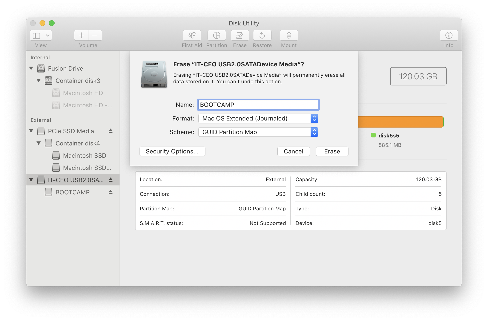
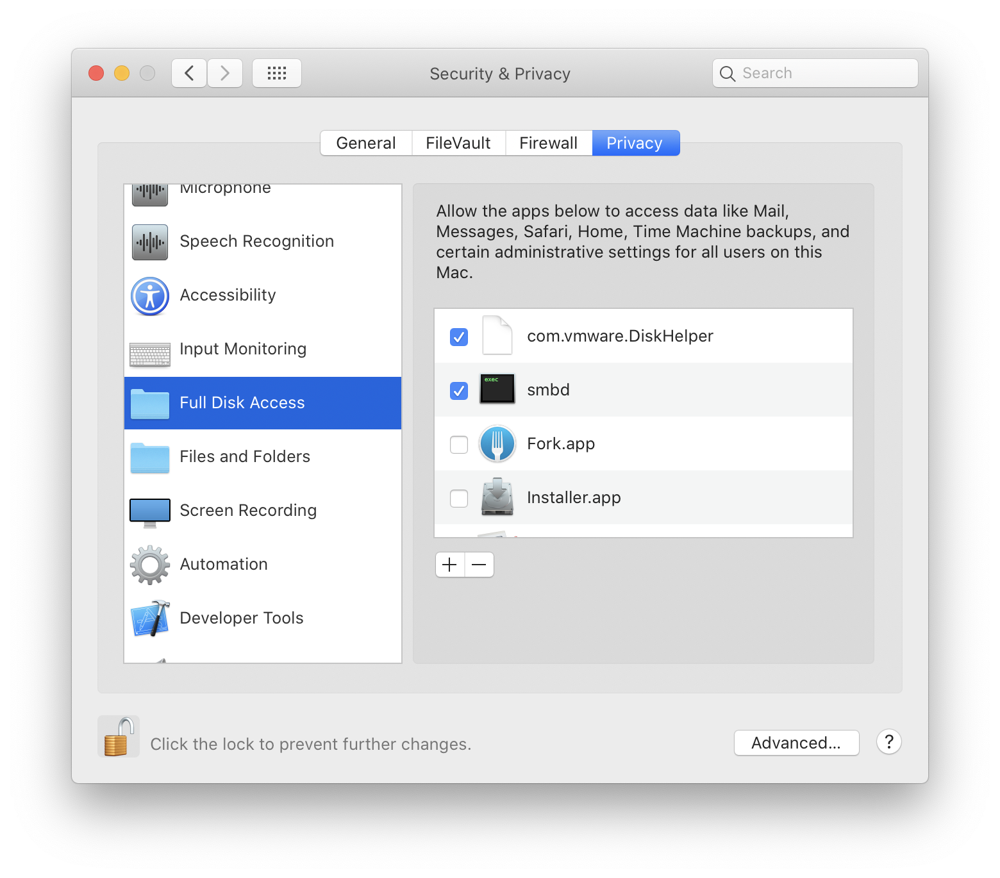

I had a spare SSD and a USB enclosure for it. Installing windows on an external drive is unsupported by Microsoft and the setup will abort stating Windows cannot be installed on an external drive. Here is how I managed to install Windows 10 Pro on the external SSD and boot from it on my iMac.
My Environment:
- 27-inch iMac 2019, running macOS Catalina 10.15.4
- 120 GB ScanDisk Plus SSD
- 2.5-inch SATA USB enclosure
Software needed:
- VMware Fusion 11.5.3 (Trial is fine)
- Windows 10 ISO
Directions:
- Launch Disk Utility and select the plugged in SSD. Format as below
Disk Utility - Format Disk
- Make a note of the Disk Id. In my case it was
disk5
- Create a new Windows 10 Virtual Machine under VMware Fusion.
- Delete the default Disk the VMware Fusion creates when setting up the machine.
- Exit VMware Fusion and launch Terminal and run the following command. Adjust the Virtual Manchine path as needed.
1
2
3
4
|
/Applications/VMware\ Fusion.app/Contents/Library/vmware-rawdiskCreator \
create /dev/disk5 \
fullDevice ~/Virtual\ Machines.localized/Boot\ Camp.vmwarevm/external-hdd \
ide
|
- Open
Boot Camp.vmx file in a text editor like Visual Studio Code and add the below lines.
1
2
|
ide1:0.present = "TRUE"
ide1:0.fileName = "external-hdd.vmdk"
|
- If you are running macOS Catalina you will need to give
Full Disk Access Permissions to com.vmware.DiskHelper. If you do not see it in the list. Try to start the Virtual Machine. You will get an error starting after which the item will show up in the list.
Security & Privacy - Full Disk Access
- Quit and Restart VMWare fusion. Start the Boot Camp vm. You will be prompted for you admin password.
- Once the VM starts boot off the Windows 10 ISO and install Windows 10 on the attached disk. Delete all partitions on the disk during install and let windows create new partitions as needed.
- Once the install is fully finished, install VMware Tools to help facilitate copying of files.
- On the Mac launch
Boot Camp Assistant.app. From the Action menu select Download Windows Support Software. Follow the steps to get the Boot Camp windows drivers.
- Copy the Drivers to the Windows machine. Shutdown the VM.
- You may now reboot into the windows partition by rebooting the Mac and holding down the Option key during boot.
- After Windows boots up, you will have to install the Boot Camp drivers by launching BootCamp setup from the
WindowsSupport\BootCamp\Setup.exe folder.
Additional Steps
- After installation of the Boot Camp drivers and reboot, Windows still had a few missing drivers under Device Manager. All I had to do was select
Update Driver and select the WindowsSupport\$WinPEDriver$ folder to look for drivers.
- Speakers were not working properly on the 2019 iMac even though all drivers were installed. I had to go to
Device Manager->Sound, video and game controllers->High Definition Audio Device. Select Update driver and point it to WindowsSupport\$WinPEDriver$\Cirrus. This installed the correct drivers and the Speakers started working.
- Another speed bump I ran into was that after a few Windows updates were applied windows declined to update to the November 2019 update stating installing Windows on External USB is unsupported. 😒 I had to go to the Registry at
HKEY_LOCAL_MACHINE\SYSTEM\CurrentControlSet\Control and set the PortableOperatingSystem value to 0 and reboot. After that the update installed ok. 😏